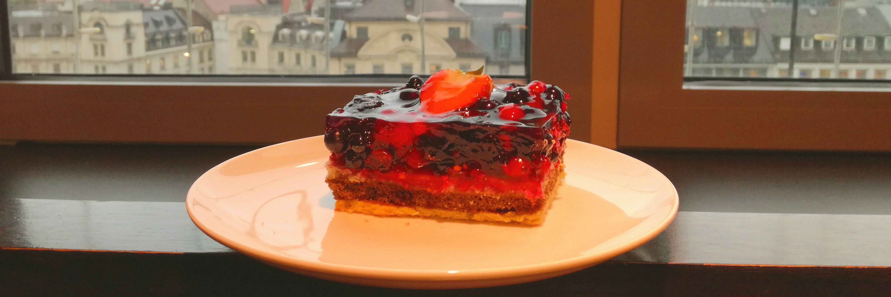

Removing the bad habit of sugar consumption
In my previous post I wrote about the struggles of eating healthy in a new country, when you have a new routine, different food and people surrounding you. Since the new year is starting, I proposed myself a challenge which is removing sugar from my diet for at least 2 months. I’ve been reducing my sugar intake for some weeks already, even in December, to try to balance the crazy eating days on the Christmas holidays, but I still feel that I need to structure my eating patterns to really start this year as healthy as possible!
The first couple of days of the new year can be really hard regarding healthy eating, you’ve made so many promises and restrict yourself so much that you probably feel you’re not able to handle it. If you’ve already failed with some of your new years resolutions, no worries! There’s always a chance to start again and get back on track.
In December the routine gets messed up, and to really start a challenge it’s better to have some days off at the beginning of the year to slowly get back to normal and then be fully prepared to new challenges. Remember always to be kind to yourself. The idea is to pursue the best and healthier version of you, and in order to achieve that, you’ll need to work on your self love first. Do this challenge not to punish yourself, but to heal your body and feel great!
Why 2 months? Breaking the cycle
We need approximately 60 days in order to create a new habit. So, to effectively remove this deadly sugary dependency, we should try to stick to a sugar free meal plan for at least 2 consecutive months, and that is removing not only white sugar, but also honey, agave, brown sugar or any other healthier version of the same thing.
In no time, after being persistent for 60 days you’re actually creating a new habit and making it part of your day to day routine. After that period of time, it would be much easier to avoid sugar socially and most importantly, from your daily life.
You can take the advantage of this 60 day challenge to experiment a bit with ingredients and recreate healthier versions of the dishes you love. I will be doing this as well, posting some recipes to keep my motivation high and hopefully yours as well! For me it’s way easier to have somebody else joining me, so together we can be stronger!
Sugar is really harmful to our bodies
We are not designed to process the amount of sugar found in mostly all processed foods out there. Sugar can cause a bunch of diseases like insulin resistance, hormonal imbalances, diabetes, fatty liver disease, candida, anxiety, depression, obesity, cancer… I’m not the big expert here, but for that you can always research and find the real dangers on your own, you can check in Autority Nutrition, Mercola, Live Science and many many more. It is always important to make sure you are informed enough before jumping at every “solution” out there. Be curious and self conscious of what you’re doing to your body.
And sugar is incredibly addictive!
Maybe some people can take it in moderation, but for the majority of us, one bite means eating the whole thing! It spikes our sugar levels, meaning that after eating a bit and feeling the nice calming sensation in our brains and bodies, when the sugar suddenly drops we cannot function properly, we feel dizzy and sleepy, and another piece of cake seems like the only real solution to our current condition.
During this 60 days, replace sugar for healthy fats and protein, that’s the only trick! It will stabilize your blood sugar levels and hunger. You’ll be able to think more clearly and feel healthier.
What to expect
Quitting sugar cold turkey could come with some side effects, like anxiety, mood swings, sleepiness, headaches and so on. That’s why if you’re used to eat great quantities of sugar, then don’t remove it all at once, it will just make things very hard for you. In this case, on the first week try to just replace your usual sugary meals like cakes or chocolates with a piece of fruit. On the second week try switching some of the fruits with raw vegetables and nut butters. And slowly keep going.
Note: This is not a plan to lose weight, it’s just meant to achieve a healthier version of ourselves, and try to include healthier habits into our lives. It could help with shedding some weight and achieving a more comfortable weight without struggling so much, because your hunger levels will be more balanced, and therefore there will be less binging on crappy foods.
The rules
- Keep it simple. The less ingredients the better!
- Eat only homemade food.
- Avoid sugar of any kind. That is the obvious sweet stuff, but also white and refined flours, processed foods, honey, dried fruit …
- Drink each morning warm lemon water right after waking up.
- Only use stevia to sweeten (and not abuse from it).
- Have only more than 85% chocolate or pure cocoa powder.
- Drink a lot of water and tea. No juices, no alcohol.
- Have a maximum of one cup of coffee a day.
- Eat low glycemic fruits like green apples, grapefruits, lemons and berries (Note: This is just for two months to stabilize the blood glucose. Fruits are always healthy and full of vitamins!)
- Eat complex carbohydrates before 4:00 pm (brown rice, sweet potatoes, lentils, beans, grains)
- Have soups for dinner or cooked vegetables with a source of protein.
- Make sure that your dishes have at least 80% vegetables.
- Have a high protein breakfast.
- Help detox the body with a daily dose of Diatomaceous Earth on an empty stomach. (You can read more about the benefits here in english and in spanish.)
- Reduce milk consumption and replace it with vegan options such as almond or coconut milk.
- Replace sugar with healthy fats. Coconut oil, butter, nuts, olive oil, full fat dairy products, avocados…
- Do yoga daily for at least 15 minutes or take long walks to calm the mind.
Note: I planned this rules like this because they are not really so different to what I usually do. But I added some extra things that will help me through my journey to removing sugar in its entirety. Of course this is just a sample and it can serve you as an idea but each person should decide and establish their own steps in order to pursue their personal goals.
Some Meal ideas
Breakfast:
- Egg omelet with spinach, feta cheese and avocado.
- Oatmeal porridge with flax seeds, coconut flour, sweet spices and 1/2 cooked green apple and skyr or full-fat yogurt.
- Arepas with lots of seeds filled with eggs, quark and avocado.
Lunch:
- Grilled or boiled chicken/turkey, brown rice sprinkled with seeds and vegetables.
- Lentil soup with spinach and spices.
- A huge salad with avocado, chicken, tomatoes and a bunch of greens.
Snacks:
- Nuts or chia pudding with full fat whole yogurt, quark or skyr.
- Raw veggies with almond butter or hummus,
- Energy balls
- Homemade whole seeds crackers, green smoothies…
Dinner:
- Vegetable cream soup with some feta cheese sprinkled on top.
- Grilled fish with a side of salad and cooked vegetables.
- Homemade seeds crackers with avocado and some raw veggies.
Let me know if you’re willing to join me in my sugar free challenge this year :) I’ll be posting some of my updates and recipes during this 2 months here in the blog and also on my Instagram account.